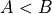
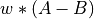
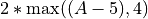
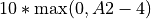

Configuring a Fitting Job¶
The Configuration File¶
The configuration file is a plain text file with the extension “.conf” that specifies all of the information that PyBNF needs to perform the fitting: the location of the model and data files, and the details of the fitting algorithm to be run.
Several examples of .conf files are included in the examples/ folder.
Each line of a conf file has the general format config_key=value, which assigns the configuration key “config_key” to the value “value”.
The available configuration keys to be specified are detailed in Configuration Keys.
Model Files¶
BioNetGen¶
BioNetGen models are specified in plain text files written in BioNetGen language (BNGL). Documentation for BNGL can be found at http://www.csb.pitt.edu/Faculty/Faeder/?page_id=409.
Two small modifications of a BioNetGen-compatible BNGL file are necessary to use the file with PyBNF
- Replace each value to be fit with a name that ends in the string “__FREE”.
For example, if the parameters block in our original file was the following:
begin parameters
v1 17
v2 42
v3 37
NA 6.02e23
end parameters
the revised version for PyBNF should look like:
begin parameters
v1 v1__FREE
v2 v2__FREE
v3 v3__FREE
NA 6.02e23
end parameters
We have replaced each fixed parameter value in the original file with a “FREE” parameter to be fit. Parameters that we do not want to fit (such as the physical constant NA) are left as is.
- Use the “suffix” argument to create a correspondence between your simulation command and your experimental data file.
For example, if your simulation call simulate({method=>”ode”}) generates data to be fit using the data file data1.exp, you should edit your call to simulate({method=>”ode”, suffix=>”data1”}).
SBML¶
SBML files can be used with PyBNF as is, with no modifications required. PyBNF will match parameter names given in the configuration file, with the IDs of parameters or species in the SBML file. If the name of a species is given, PyBNF fits for the initial concentration of that species.
PyBNF assumes that any parameters and species that are not named in the config file are not meant to be fit - such values are held constant at the value specified in the SBML file.
To avoid mistakes in configuration, you may optionally append “__FREE” to the names of parameters to be fit, as with BioNetGen models. PyBNF will raise an error if it finds a parameter ending in “__FREE” in the SBML that is not specified in the configuration file.
Caution: If you are using COPASI to export SBML files, renaming a parameter is not straightforward. Typically, renaming a parameter only changes its name field, but PyBNF reads the id field.
Note that SBML files do not contain information about what time course or parameter scan simulations should be run on the model. Therefore, when using SBML files, it is required to specify this information in the configuration file with the time_course and param_scan keys.
Experimental Data Files¶
Experimental data file are plain text files with the extension “.exp” that contain whitespace-delimited tables of data to be used for fitting.
The first line of the .exp file is the header. It should contain the character #, followed by the names of each column. The first column name should be the name of the independent variable (e.g. “time” for a time course simulation). The rest of the column names should match the names of observables in a BNGL file, or species in an SBML file. The following lines should contain data, with numbers separated by whitespace. Use “nan” to indicate missing data. Here is a simple example of an exp file. In this case, the corresponding BNGL file should contain observables named X and Y:
# time X Y
0 5 1e4
5 7 1.5e4
10 9 4e4
15 nan 6.5e4
20 15 1.1e5
If your are fitting with the chi-squared objective function, you also need to provide a standard deviation for each experimental data point. To do so, include a column in the .exp file with “_SD” appended to the variable name. For example:
# time X Y X_SD Y_SD
0 5 1e4 1 2e2
5 7 1.5e4 1.2 2e2
10 9 4e4 1.4 4e2
15 nan 6.5e4 nan 5e2
20 15 1.1e5 0.9 5e2
Constraint files¶
Constraint files are plain text files with the extension ”.con” that contain inequality constraints to be imposed on the outputs of the model. Such constraints can be used to formalize qualitative data known about the biological system of interest.
Each line of the .con file should contain constraint declaration consisting of three parts: an inequality to be satisfied, an enforcement condition that specifies when in the simulation time course the constraint is applied, and a weight that controls the penalty to add to the objective function if the constraint is not satisfied. Specifically, if a constraint of the form  with weight is violated, then the value added to the objective function is .
The weight may be omitted and defaults to 1. The inequality and enforcement clauses are required
Inequality¶
The inequality can consist of any relationship (<, >, <=, or >=) between two observables, or between one observable and a constant. For example A < 5 , or A >= B.
Note that < and <= are equivalent unless the min keyword is used (see Weight).
Enforcement¶
Four keywords are available to specify when the inequality is enforced.
always- Enforce the inequality at all time points during the simulation.A < 5 alwaysonce- Require that the inequality be true at at least one time point during the simulation.A < 5 onceat- Enforce the inequality at one specific time point. This could be a constant time point:A < 5 at 6or equivalently,A < 5 at time=6It is also possible to specify the time point in terms of another observable.
A < 5 at B=6- Enforce the inequality at the first time point such that B=6 (more exactly, the first time such that B crosses the value of 6 between two consecutive time steps)Using similar syntax, we can specify that the constraint is enforced at every time B=6, not just the first, using the
everytimekeywordA < 5 at B=6 everytimeThe
firstkeyword says that the constraint should only (this is the default behavior, so this keyword is optional)A<5 at B=6 firstIf the specified condition (B=6 in the example) is never met, then the constraint is not applied. It is often useful to add a second constraint to ensure that an “at” constraint is enforced. In this example, assuming the initial value of B is below 6, we could add the constraint
B>=6 oncebetween- Enforce the inequality at all times between the two specified time points. The time points may be specified in the same format as with the at keyword above, and should be separated by a comma.A < 5 between 7, B=6would enforce the inequality from time=7 to the first time after time=7 such that B=6.If the first condition (time=7 in the example) is never met, then the constraint is never enforced. If the second condition (B=6 in the example) is never met, then the constraint is enforced from the start time until the end of the simulation.
Weight¶
The weight clause consists of the weight keyword followed by a number. This number is multiplied by the extent of constraint violation to give the value to be added to the objective function. For example:
A < 5 at 6 weight 2
If the inequality A < 5 is not satisfied at time 6, then a penalty of 2*(A-5) is added to the objective function.
The min keyword indicates the minimum possible penalty to apply if the constraint is violated. This minimum is still multiplied by the constraint weight.
A < 5 at 6 weight 2 min 4
If the inequality A < 5 is not satisfied at time 6, the penalty is . Since we used the strict < operator, the minimum penalty of 8 is applied even if A=5 at time 6.
In some unusual cases, it is desirable to use a different observable for calculating penalties than the one used in the inequality. For example, the variable in the inequality might be a discrete variable, and it would be desirable to calculate the penalty with a corresponding continuous variable. This substitution may be made using the altpenalty keyword in the weight clause, followed by the new inequality to use for calculating the penalty.
A < 5 at B=3 weight 10 altpenalty A2<4 min 1
This constraint would check if A<5 when B reaches 3. If A >= 5 at that time, it instead calculates the penalty based on the inequality A2<4 with a weight of 10: . If the initial inequality is violated but the penalty inequality is satisfied, then the penalty is equal to the weight times the min value (10*1 in the example), or zero if no min was declared.
Constraints involving multiple models¶
By default, observables in constraint files are assumed to come from the model that the .con file is mapped to, and the simulation suffix matching the .con file’s name (the same convention as for .exp files). However, it is possible to use “dot notation” to refer to observables in other simulations, as in the following example.
fit.conf:
model = model1.bngl : wt.exp
model = model2.bngl : mut.con
mut.con:
A < wt.A always
In this example, the constraint would check that the value of A in the simulation of model2 with suffix “mut” is less than the value of A in the simulation of model1 with suffix “wt”. In this way, it is possible to write constraints involving the outputs of multiple models.
To use this feature, all simulation suffixes must be unique across all models. In addition all observables used in a single constraint must have the same independent variable with the same step size.